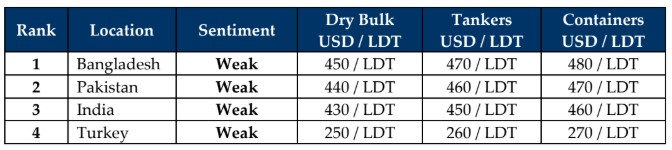

inWeekly Demolition Reports12/05/2025

This week, the world unraveled further into chaos as India and Pakistan entered a 3-day armed conflict that saw an equal measure of casualties on both sidesand Indian missiles & drones targeted key defense targets deep inside Pakistan, including Pakistani air force installations, surface-to-air missile systems, and targets uncomfortably close to Pakistan’s nuclear facilities & command centers, in a show of force that reportedly resulted in urgent calls from senior Pakistani officials to their Indian counterparts requesting an immediate cease-fire from both sides. Subsequently, reports surfaced that the United States threatened to withhold the upcoming USD 1.3 Billion IMF aid-package to Pakistan that was due for release on May 9th, which Indian officials contested against on account of ongoing misappropriations by the government of Pakistan, which India claims is being used to fund cross-border terrorism, including how USD 440 Million from the last tranche remains unaccounted for and still under IMF investigations. Pursuant to the ceasefire, Pres. Zelenskyy seized the opportunity and urged for a Russia-Ukraine ceasefire, even proposing a meet with Putin in Istanbul this coming Thursday, in an effort to stop the killing.
In the meantime, Team Trump continues to steamroll the U.S. Economy and global trade volumes as reportedly on Friday, not a single cargo ship had departed Chinese ports for the U.S. markets, in troubling signs of what is about to unfold as this is the first time the U.S. has encountered such a situation since the worst days of Covid-19 closures. As ongoing volumes of international trade start to dissolve, the Baltic Exchange Dry Index reported a 1.3% drop with both Capes & Panamax indices falling 2.5% & 0.7% respectively, in clear signs that tariff infected products are rapidly running of out of supply chains. Surprisingly, despite trade volumes faltering and demand for bunkers starting to slip, oil futures made a healthy 1.8% jump this week and ended at USD 61/barrel on the back of the news that Treasury Secretary Scott Bessent was due to meet with Chinese officials this week, in an effort to iron out US – Chinese trade agreements, in addition to the news of a separate US – UK trade agreement that still leaves a 10% tariff on U.K. products exported to the U.S.
As a result, sub-continent recycling markets too have been on a negative spiral of late, especially as we head into the quieter monsoon season and Pakistani & Bangladeshi recyclers need to speed up their readiness and ensure yard compliance with the Hong Kong Convention by June 26th. While nearly all Indian yards are certified, the focus shifts to neighboring Pakistan and Bangladesh to get their facilities up to speed – and do it soon. NOCs on ships have meanwhile been granted as an exemption just this time, resulting in a busy anchorage not only in Bangladesh, but also in India, all whilst Pakistan remains stranded for a 3rd week with no fresh arrivals. Flatlining / declining steel plate prices including mixed performances by currencies (even Turkey) also didn’t help move the pricing needle at any recycling destination, especially given that the overall number of candidates has simply disappeared from the bidding tables of late, and ship owners collectively wait to see the eventual outcome of trade negotiations in the coming weeks before evaluating freight rates and deciding whether to continue trading their older assets at reasonable / above opex levels, or a trip down recycling lanes is on the charts. Certainly, a hot cup of testy times is on the menu for May.
For Week 19 of 2025, GMS Market Rankings / vessel indications are as below.

📄 Download PDF: Ship-recycling-market-insight-Week-19-05-09-2025-Testy_Times.pdfSource: GMS,Inc.https://www.gmsinc.net/gms_new/index.php/web